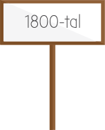
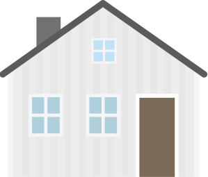
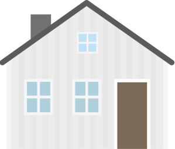
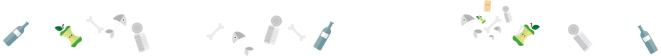
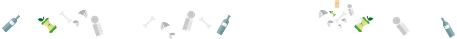
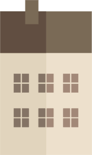
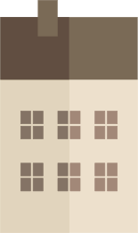

Förr i tiden när Sverige var ett jordbrukssamhälle levde människor mer i samklang med naturen. Matrester användes som foder till grisar och gödslet hamnade i jorden som näring till ny mat.
Eftersom det inte fanns några fabriker fanns det nästan inga sopor heller och de som fanns var huvudsakligen organiska, lätt nedbrytbara. Det mesta återanvändes.



 



 

Tio procent av befolkningen bodde i städer i början på 1800-talet. Gatorna och rännstenarna fungerade som soptipp. I bästa fall la man avfallet i en grop på gården. Det ledde till att koleran nådde Sverige 1834.
För att hindra spridning av sjukdomar började man bygga soptippar utanför städerna. 1868 blev det förbjudet i lag att slänga avfall på gatan. Men ända fram till slutet på 1800-talet bodde de flesta i Sverige på landet.


 



Först när Sverige utvecklades till ett industrisamhälle och allt fler människor flytade in till stan för att få jobb i början på 1900-talet, skapades det samhälle vi har idag. 1935 bodde fler människor i städer än på landsbygden.
De flesta kommuner hade sophämtning och sorterade ut sådant som kunde användas som växtnäring och som foder till bland annat grisar, men kemikalier från fabrikerna släpptes ut i naturen direkt eller grävdes ner.
Redan under Romarriket fanns kloaker och regler mot nedskräpning i städerna, så kunskapen om avfallshantering och avloppssystem fanns.


”1952 Den stora stankens år” är en rubrik från den tiden som beskriver hur det var i Malmö då. Både på landet och i stan hade en del människor utedass väldigt länge. Tankbilar åkte runt och tömde dass långt in på 70-talet i våra storstäder.
Trots det är det först på 50-talet som reningsverk byggs i storstäder som Malmö. Innan dess gick avloppsvattnet ut i havet utan någon rening.


Idag 35 år senare är vi väldigt medvetna om hur våra sopor påverkar miljön och avfallshanteringen är välutvecklad.
Det finns regler för hur farligt avfall ska hanteras och det mesta sorteras. Soporna och matavfallet har blivit en resurs som kan återanvändas på olika sätt.


Våra politiker har bland annat bestämt att minst hälften av matavfallet från hushåll, storkök, butiker och restauranger ska sorteras senast 2018.

Målet för transportsektorn är att minst tio procent ska vara förnybar energi senast år 2020. 2008 kördes cirka 5 procent av våra fordon med biodrivmedel.